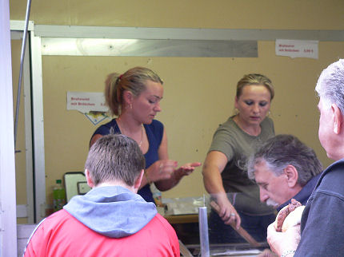

|
Fortuna Düsseldorf - Roda JC (1-1) 1 augustus 2006
|
Na 10 euro neergelegd te hebben voor een oefenwedstrijd wachtte een muur
van "Ordners" voor een fouillering.
Het bier (Frankenheim Alt) werd in dezelfde statiegeldbekers geschonken
als bij Alemannia Aachen.

Na een reusachtig broodje döner kebab in Düsseldorf City hoefden we niks
meer van deze Brattwurst-babes.
796 toeschouwers waarvan enkele tientallen Rodasupporters.
V.l.n.r. Meeuwis, Van Dessel, Oper en medicus Hermans die vanaf de
tribune toekijken. Sonko is op proef bij Wolverhampton. Cristiano was niet
bij de selectie.
Om 19.00 uur wordt begonnen met:
Castro, De Fauw, Saeijs, Voigt,
Lachambre; Leemans, Bodor, Agustien, Bouchiba, Gregorek en Cissé.
De Pool Gregorek liet in zijn eerste testmatch weinig zien. Het spandoek
van oud-Rodaspeler Giuseppe (Pino) Canale trok meer aandacht.
Pino voor zijn doek. Rechts Ken Leemans.
De harde kern van Düsseldorf aan de overkant.
De matige wedstrijd voltrekt zich voornamelijk op de helft van Roda. De man
met rugnummer 11 scoort in de 25e min. 1-0.
Hij wordt uitvoerig gefeteerd en muziek schalt door het stadionnetje. Het
was een omslachtig doelpunt. Eerst stompte Castro de bal prachtig weg,
maar vanuit de rebound kwam de bal in een klutssituatie waarvan Dennis
Wolf dus profiteerde.
Er speelde nog een oud-Roda JC speler mee: Henri Heeren. Hij werd in de
70e min. vervangen. Düsseldorf wisselde liefst negen maal!
Na de 1-0 wordt Roda iets brutaler en in de 33e min scoort Kemy Agustien
de gelijkmaker, (1-1). De tweede helft was voor Fortuna met veel schoten
die ofwel prachtig gered werden door Castro of de lat en paal troffen.
He he, ja!
Na de rust treedt Roda aan met Senden voor De Fauw, Kah voor Saeijs,
De Jong voor Bodor, Vandamme voor Bouchiba en Van Tornhout voor Cissé.
Regen en zon wisselen elkaar af. De feestverlichting wordt ontstoken en
een regenboog verschijnt aan de einder.
Gregorek mag de hele wedstrijd proefdraaien.
Nog een sfeerbeeld van de "overkant" vanwaaruit men Alexander Voigt
weinig liefdevol toezong.

Vrije trap Marcel de Jong die niks oplevert.
Drie generaties Postert-Koempels plus een gespannen Marcel Meeuwis.
Altijd goed voor je nichtjes zorgen, ook al wonen ze aan gene zijde...
Kujovic komt er niet meer aan te pas. Castro verdedigt het doel meesterlijk
en moet hier ingrijpen na een verdedigingsblunder van Kah.
Van Duitse zijde was er vooral bewondering voor Vandamme die inderdaad
aantrekkelijk voetbalt door zijn uiterst soepele en snelle bewegingen.
John van Alst informeert bij Andres Oper of hij in Gregorek een concurrent
ziet.
Sekou Cissé is vrolijker dan Huub Stevens na deze wedstrijd.
Bij het verlaten van Het Paul Janes Stadion valt op dat er nog meer politie
aanwezig is dan voorheen.
Het ziet ernaar uit dat een aantal deugnieten culmineert bij de uitgang.
Waarschijnlijk niet om een handtekening te vragen aan de spelers.
Eins-Zwei, Polizei.
Het spel van Roda is nog steeds weinig hoopgevend. Tegen een club
uit de
Regional Liga Nord is een gelijkspel een matig resultaat. kijkend
naar
balbezit en kansendichtheid was Roda de onderliggende partij,
helaas!
Beste man bij Roda was Castro. Gregorek lijkt geen aanwinst....
© Koempels Pleasure Dome
|